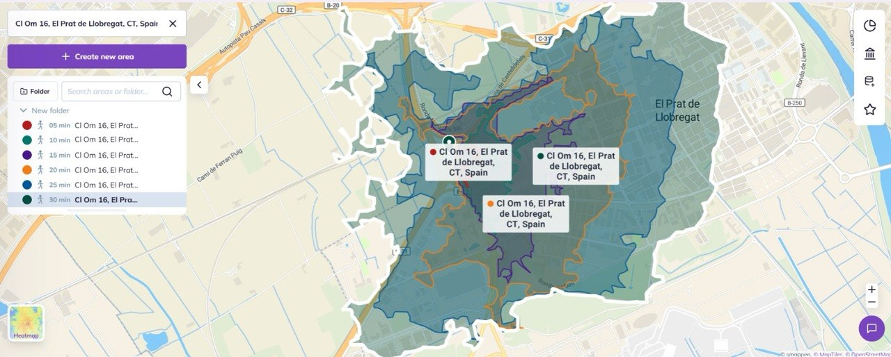
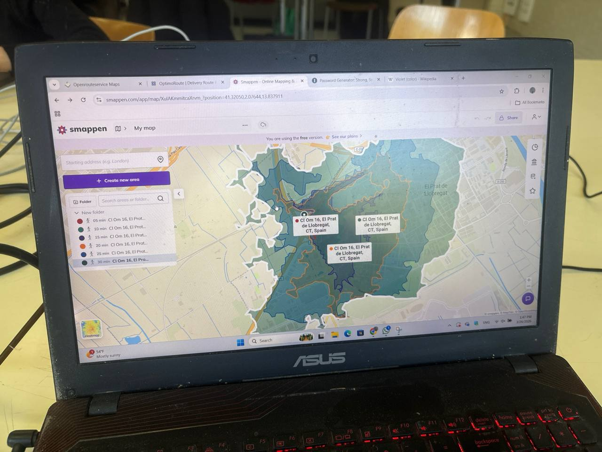

Research Showcase
Multimodal Isochrone Analysis & Smappen Data Fusion

METHODOLOGY
Data Fusion Analysis
Utilizing OSMnx for street topology and NetworkX for Dijkstra's shortest path calculations. Integrated Smappen POI datasets to map urban functions within time-based radii, optimizing architectural accessibility.


SPECS
Travel Weights
Walk: 75m/min
Bike: 250m/min
Drive: 600m/min
INSIGHT
Optimization
85% core coverage within 10-min walk.